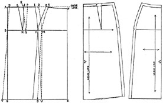
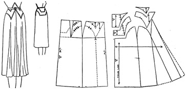
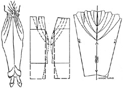

1942—Modern Pattern Design
by Harriet Pepin
Chapter 8—Skirts
The methods used for cutting skirts are being presented at this point, because after having studied cutting principles applying to other portions of the garment, you will have acquired a deep appreciation of the artistry required to produce a pattern for a well hung skirt.
The skirt is the portion of the garment which is essentially physical in character. It covers the hips and limbs of the wearer. Emphasis placed upon certain areas will give the woman a sexy appearance. In some cases, this might be deliberate intent on the part of the designer, but when it has been done unintentionally, and the garment is worn by the wrong type of woman, the results are disappointing.
The garment which has a flattering skirt will be the favorite in any woman's wardrobe. Unfortunately, many women's figures are such that there is a great need for flattering the hips and limbs and a well designed skirt will sell the rest of the garment to the customer. Every woman secretly yearns for beauty of limb more than beauty of face. Hence, if you would become known for your talent as a designer, learn to cut shapely, flattering skirts and your future will be assured!
The silhouette and the length of the skirt is a vital point in changing styles. It has been widely said that the skirt will "date" the garment. It must be proportioned to suit the size of the wearer and the height of the hemline. It must be designed as a unit. It is therefore a dangerous procedure to merely shorten a skirt three inches in an attempt to bring a dress into current style.
A few professional terms describe skirt features:
1. Sweep: is used to describe the width at the hemline.
2. Movement: refers to the fullness or the bulk of the silhouette.
3. Break: is the point where the fitted area of the skirt breaks away from the body into movement.
Because the skirt is suspended from the waistline and falls naturally from some given point, a well hung skirt is the result of the proper placing of the grain of the fabric. If this is not carefully planned, it may sag or pucker at the seams or twist on the body. When the pattern is being designed, the texture of the fabric must be taken into consideration in planning the degree of movement and sweep. A skirt designed to be used for a tweed fabric would appear skimpy when used for light weight silk or chiffon.
When one says, "The skirt has good lines," he means to say that it has a pleasingly balanced silhouette, the break being well placed for the length of the skirt and the amount of movement. The seams within that silhouette are also pleasingly spaced to create the impression of a perfectly proportioned woman. It must be equally attractive whether the figure is standing or in motion. A well fitted skirt will not cause wrinkles to appear through excessive fitting in any one area. The flattering skirt will veil the bad proportions of the wearer and reveal the good ones to a modest degree. It will be smoothly fitted, but it will at no time appear to hamper freedom of movement.
How to Take Measurements Correctly
The measurements needed to draft a skirt sloper would normally be recorded at the time measurements would be taken for the bodice and sleeves. As some of the bodice measurements are common to the skirt draft, turn back to your basic measurements to ascertain the following:
- Number 11. Front Waistline Measurement
- Number 11. Back Waistline Measurement
- Number 13. Shoulder Blade Width (back only)
- Number 14. Front Hip Measurement
- Number 14. Back Hip Measurement
Take these length measurements from waistline tape to floor:
- Front Center Skirt Length Measurement
- Side Skirt Measurement
- Back Center Skirt Measurement
The method used for taking these last three length measurements is shown in Fig. 1. On the normal size 14 slopers used in manufacturing plants usually the back length is made one half inch longer than the front length measurement. It is assumed that the posture is ideal which provides for a true horizontal waistline and the difference in length is due to the additional length caused by the curve at the back hips. The side length measurement is made equal to the back length measurement. The front section of the skirt would be curved downward at the waistline towards the center front to a point one half inch downward.
These proportions would vary in patterns used for larger size garments. Manufacturers of specially sized "stouts" use special slopers which provide for abnormal deposits of flesh and imperfect posture. It is interesting to know that most irregular size, stout women would not have abnormal flesh distribution if good posture had been maintained!
The vertical skirt length measurement to the floor is a permanent record. As the fashion changes the heights of the skirt hems change. It is also convenient to have the full length measurement in case one has occasion to cut a full length garment. Naturally, when fitting slopers to individuals, the measurements would be taken directly from the individual and the proportions might differ somewhat from the standard figure of that height.
You will recall, when you were experimenting with various hip length bodice patterns, you found that the jacket which had a center back seam, with accompanying darts, produced a close fitting jacket. When the center back seam was eliminated for a fold of the fabric, a semi-fitted garment resulted. This skirt pattern is intended to be worn separately or as the attached skirt to a bodice for a dress. It is not an extension of the hip-length bodice pattern. Such an extension would be used to produce a vertically fitted garment having no waistline. Such designs are presented later in this text. The simple, basic skirt sloper should be cut on the fold at the front and back centers and the back darts provide the control of the shaping through the back hip area. The shaped side seams aid in fitting the side hip area.
Drafting the Two-Pieced Skirt Sloper
Fig. 2 illustrates the simple skirt sloper which forms the basis for a wide variety of dress and suit skirts. It is seldom used as a skirt pattern in this simple form. When it is, usually extra inverted pleats are added in at least one side seam to provide ample walking room.
Your finished draft will provide a minimum of walking room needed for a slender figure. Larger size women need walking room distributed around the skirt and therefore this style would not be suitable for such individuals as it would mean adding all the required walking room at the two side seams and that would result in an ugly silhouette.
The basic hip darts extending from the waistline to the hip in the back are basic control darts. Note that they are slightly tilted outward at the hip. This conforms to the natural contour of the feminine body. Further comment will be made as to the possibilities of changing the position of the darts when designing for certain proportioned individuals. These darts are needed to give a smooth fit to the back hips when a skirt has a straight silhouette. They control the fabric over the back hips.
In Fig. 3 on this page, note that the side seams provide the fitting for the side hip curve. Also note that the side seam of the front section is more curved than the back. This is caused by the fact that the ideal figure has a straight silhouette at the front and the curve of the hip starts at each side. Certain types of figures require some control in the front. In later lessons you will observe how the curve of the side seam may be lessened when darts are used.
Read Each Step Carefully
All measurements given here are for an average size 14 figure. See chart on page 59.
A-B—Draw the vertical line A-B equal in length to Back Skirt Length. (Determined by subtracting height of desired hemline from full length measurement.)
A-C—From point A, on line A-B measure downward a distance equal to Hip Depth. (In standard sizes placed at seven inches but with individuals, it may vary from 6 to 10 inches.) Label point C.
B-D—From the line A-B, square a line to the right, equal to one half the Back Hip Measurement. Label point D.
D-E—Extend the line B-D an amount equal to one half Front Hip Measurement. Label E.
E-F—From the line B-E, square a line upward which is equal to line A-B. Label F.
A-F—Connect points A and F with a straight line. Line A-F must equal B-E.
F-G—This line equals the line A-C. Connect points G and C.
D-H-I—Square a line upward from point D to intersect the line C-G. Mark point of intersection H. Extend this line to intersect with line A-F. Label point I.
F-J—The area between points F and J equals the difference between the Center Front Skirt Measurement and the Center Back Skirt Measurement. Label point J. (Occasionally, in certain individuals, these measurements are the same. In such cases, eliminate location of point J.)
J-K—From point J, measure off a distance on the line F-I equal to half the Front Waist Measurement. Label point K. With the aid of your curve draw lines J-K and K-H.
A-L—From point A, on line A-I, measure off a distance equal to half Back Shoulder Blade Width less one-half inch. Label L.
C-M—From point C, measure off distance on the line C-H equal to the line A-L plus one inch.
Subtract half Back Waist Measurement from the length of line A-L. Cut small strip of paper equal to this difference. Fold strip into three equal parts.
L-N—From point L on line L-I, measure off a distance equal to two-thirds of the strip of paper and label point N. Connect points L and N with point M to form back hip dart.
I-O—From point I on line I-N, measure off a distance equal to the remaining unused third of strip of paper. Label point O. Use curve to connect points O and H.
D-P—From point D on the line D-B, measure off one and one-half inches and mark point P, (to provide minimum walking room in side seam).
D-Q—From point D, on the line D-E, measure off a distance of one and one-half inches and mark point Q. (This adds an equal amount of walking room to back section on each side.)
NOTE: Because line K-H is more intensely curved than O-H, it should be shortened at K to make two lines of equal length.
Slip another piece of paper beneath your draft and trace off the pattern for the back section as follows: A-C-B-P-D-Q-H-O-N-M-L-A. Also trace the position of the hip line OM-H. Mark point D to show position of a notch.
Slip another piece of paper beneath your draft and trace off the front section as follows: J-G-E-Q-D-P-H-K-J. Trace in position of hip line G-H. Mark D for a notch.
Allow normal construction seams at side and waistline. In all your skirt muslins, no seam allowances need be added to the lower edge.
Place notches and punch hole to show back dart.
Place grain lines at right angles to hip line.
Place notches to indicate position of point D on each section.
Lay finished patterns together as shown in Fig. 3, page 169. Remove the point at the hemline (dotted lines) to produce a continuous, shallow curve.
Produce your muslin proof, leaving ample seam allowance at side seams. Model forms vary and your finished sloper should provide same walking room provided for in lower portion of model form. When muslin has been approved, make cardboard slopers from pattern.
In the instructions given you to make the draft, the rectangle was first established, based upon the hip measurements of the back and the front. The back hip dart was established as two-thirds of the difference between the back hip measurement and the back waist measurement. The remaining third of the difference was left to shape the fabric at the side seam. This proportion is that found pleasing for the average woman. When you make such a draft for an individual, the muslin pattern proof can be assembled without cutting away the areas at the side seam and then with the muslin on the individual, the distribution of this tapering to meet the waistline can be manipulated according to the actual shape of the figure of the customer.
It was mentioned that the basic skirt sloper is seldom used in its simple form as a pattern for a skirt. The reason for this is obvious if we will stop to reflect that the motion of the limbs when walking is forward and backward. Hence, the perfectly plain front, which provides no actual means for the movement of the limbs, would have a tendency to wrinkle across the abdomen when the figure is in motion. The additional "walking room" added at the side seam helps a little, but it isn't actually needed at that point, but is needed in the front of the skirt instead.
If you will study your skirt pattern, you will notice that the front was fitted in one place only— at the side seam, yet, in fact, most women have a slight curve caused by the abdomen. Hence, should your customer have such a figure shape, you might adjust the muslin on her figure to provide a little dart about half way between the center front and the side seam. This would then reduce the amount of shaping that would be provided at the side seam and would distribute the fit more accurately.
Hence, if you wished to produce a "perfectly plain" skirt pattern and the individual being fitted had a pronounced curve at K-H, you would establish a small dart in the side front between J and I in the draft and then the distance from K to I would be established in the same manner that point O on the back section was established. Such a dart, if folded out in the pattern and a slash is made from the hemline to the dart point to effect shifting fullness to the hemline, would be referred to as a "working dart." It serves a functional use in changing the shape of the pattern for a functional reason. The resulting "perfectly plain" skirt pattern would have just a little more room at the hemline in the front than the basic sloper would have and would be more attractive on the figure.
The sloper, as it now is, then, is a diagram or pattern of the measurements of the individual to whom it has been fitted. The notches placed at the common point D on each section will indicate to you where the "walking room" area starts. Some patterns include the use of the walking room. Other patterns eliminate the need for it by throwing the movement to the back and front entirely.
Analysis of Individual Skirt Slopers
The above diagrams show the gradual changes which appear in patterns for increasing figure proportions. In these illustrations, the lines across the hip show the position of the grain of the fabric, which, in most cases, is not visible. Only in rare cases, when a fabric which has a pronounced stripe might be used crosswise, would the grain line be apparent. And, by looking at the illustration of Mrs. Heavy, you can readily imagine how unsuitable such a skirt would be for her. However, it might be used for Mrs. Slim who has a straight waistline and hip line.
The hipline is the point from which the skirt is hung. With the various figures, the pattern shows more fabric above the hipline at the back while the front section shortens a proportionate amount.
The side seams of the skirt may be adjusted as desired to suit the natural contour of the figure being fitted. Mrs. Slim, being erect in posture and carriage, requires a hip side seam which is practically perpendicular. As the figures grow heavier, the side seam is gently curved to conform to the natural contour of the figure. In cases where the individual has an excessively bad posture, the curve would be limited slightly rather than permit it to repeat the excessively bad posture line at the back.
It is technically possible to cut and fit many styles of skirts to certain types of figures; but, when the muslin is completed, it becomes obvious that, despite the fact that the skirt has been fitted, it is not suited to the individual. Therefore, you will soon learn that every individual has certain proportions which are flattered most advantageously through only a certain few styles of skirts and a certain few silhouettes.
Illustrated herewith are two common types of bad posture which require major alterations in ready-to-wear skirts. To correct the fit of a standard size skirt for an extreme example of such posture would require ripping the skirt apart and re-hanging it entirely. When the case is moderate, the fit may be corrected somewhat, but these women should have their clothes specially made for them whenever possible.
Fig. 1 probably has rounded shoulders and the resulting "question mark" silhouette thrusts the abdomen and hip bones forward and destroys the natural curve of the back hips. In fact, her silhouette is about opposite to what it should be. The position of her hip level will be lower than normal.
Fig. 1 shows her wearing a standard size garment. Notice how the curve of her abdomen lifts the hemline and pulls the side seam forward. In extreme cases, this will cause the side seams of the skirt to ripple. The back section of the skirt is completely thrown out of line because of what has happened to the front section. Because she does not have the normal curve at the back hips provided in the standard garment, it will bulge at the back and probably dip at the hemline. It may wrinkle near the waistline also.
Fig. 2 shows a sloper fitted to this same woman. The grain line is established at the level of her hips. To accommodate the curve of her abdomen and front hip bones, a small dart is placed at each side of the front. The side seam is hung as straight as possible and the waistline is dropped at the front slightly to hide her bad posture.
When making a skirt of wool fabric, the extra front dart area may be eased into the waistband and then steamed out over a curved cushion. When designing gored skirts for her, this shaping provided by the dart may be hidden in the seams. But that shaping must be provided to achieve a properly hung skirt which will hide her physical defects.
Fig. 3 shows the example of the opposite in bad posture. This is not common to large women only. If you will study girls of high school age, you will see too many who carry themselves in this manner, thinking, in so doing, they are standing "straight." Note what happens to the fit of the standard size garment when worn by such a figure. Because her back hips are thrust outward, this lifts the back hemline and pulls the side seams backward. It then causes the front section to pull tightly just below the abdomen and wrinkles appear in the skirt after a few moments of wearing the garment. You can readily see that to properly hang this skirt, it must be ripped apart, lifted all around to provide sufficient width to the back section, and entirely re-hung.
Fig. 4 shows how her sloper should be fitted. To eliminate the wrinkling across the front the skirt should be suspended from the curve of her abdomen. Due to her posture the front waist measurement will be larger than her back waist measurement. The back hips being large, the control darts at the back will be just that much larger. The waistline should be lifted slightly in the front, but a loose belt would have a tendency to drop at the front unless supported by being attached to the garment.
Lay your transparent ruler parallel to the center front and sketch in a straight line for the side seam. Note that, in order to reduce the evidence of her back hip width, it is advisable to shape the line of the side seam with a slight curve. Do not let it exactly follow the contour of the back of her body, because that would only emphasize that bad line. A modified curve is the best line to use in such a situation.
Obviously, even though adjusted, the straight skirt does not flatter such a figure. The vertical line of the muslin below the hips only intensifies the curve above. With your pencil, lightly sketch in a line on Fig. 4 to widen the back of the skirt from the hips to hemline. Her "plain skirt" should be made like the following tailored suit skirt pattern.
Drafting the Tailored Suit Skirt Pattern
At first glance, this skirt looks very much like one made from the basic skirt sloper. But the normal walking room added to the side seams has been shifted to the center back and the side seams have been moved forward slightly to give a slenderizing effect from a front view. It is a skirt popularly used to combine with tailored suit jackets which require a slim skirt from a front view to balance the slim lines of the jacket. It is not generally used as the skirt to complete a dress, because of the change of position of the side seams which would not conform to those established in the simple bodice. However, there is no reason why it could not be used, if the bodice is so designed as to require the use of an unattached skirt, as is the case in many evening gowns.
The draft is started by tracing around the back and front sections of the basic skirt sloper. (See diagram on following page.) The normal walking room is eliminated at the side by placing the notch at the hemline of the back sections upon the notch of the front section which has been traced. These seam allowances are shown by the solid lines extending from point H on the diagram. When tracing is completed, label all points from A to L as illustrated.
Dotted lines show procedure. The dimensions given below are suitable for a size 14 or 16 skirt.
M—Locate this point one inch to the right of point H.
N—Locate this point three-fourths inch from point G. (This straightens the curve of new side seam slightly and enlarges waistline one-fourth inch.)
M-N—Draw new front side seam N-M.
O—Place this point one inch from point I.
O-M—Draw the new back section side seam O-M.
P—Locate point P one inch to right of point J.
Q—Locate point Q one inch to right of point K. (This reduces size of normal back darts and moves them out slightly for better proportion.)
R—Locate point R one and one-half inches from point L. (This reduces size of back dart one-half inch.)
R-Q-P—Draw in new dart R-Q-P.
In locating point N, waistline was enlarged one-fourth inch.
In locating point R, you reduced width of the dart one-half inch.
S—Hence, locate point S three-fourths inch from point A.
T—Extend line from S through point B equal to original center back skirt length of original skirt sloper A-B-C. Note that the extra walking room appears between points T and C. Square hemline T-C from point T to C.
U—This point marks the normal amount of walking room which extended beyond the notch in tracing your back section.
M-U—Connect point U with the new side hip point M. This makes the dotted line O-M-U the side seam of the back section of your new draft.
M-D—The new front section side seam is established by connecting point M with point D. Line N-M-D becomes the new side seam of the front section.
On another piece of pattern paper, trace off the following front and back sections:
Front: E-F-N-M-D-E.
Back: T-B-S-R-Q-P-0-M-U-D-C-T.
Trace along perforated lines with blue pencil to observe shape of the new pattern when compared to basic sloper.
Establish grain from center back and center front edges of pattern. Note that, due to the extra sweep being centered at the back, skirt hem does not appear on a parallel with hip level.
Complete pattern by adding symbols shown and produce the muslin proof for the entire skirt so you may notice the resulting silhouette. Study it from every angle and compare it with muslin from a basic skirt sloper. If you have recorded grain lines at the hip, you will see the results if this pattern were to be used for pronounced plaids or stripes. It has its limitations as most patterns have.
Multiple Darts
When you design skirts for women having a large back hip measurement and a small back waist measurement, the back dart must necessarily be very large to provide the shaping for the pronounced curve. In such cases, it is advisable to divide the basic control dart as was suggested in bodices. The method used would be just like that which you have previously studied in sleeves and bodices.
When striped fabrics are being used, dividing the control in this manner will also aid in concealing the control somewhat. The result will bring further emphasis upon the pattern of the fabric and will reduce the obvious appearance of the necessary darts required to shape the fabric to the badly proportioned figure.
Skirt Patterns Cut According to Fabric Width
The skirts included in this group are usually designed "according to the cloth." On some occasions, the fabric being too narrow to use lengthwise without seams, it may be used crosswise. Wholesale designers arrange position of pleats to aid in hiding the piecing seams when possible.
All of these skirts are based upon the methods used for making your basic sloper. The measurements which you took for that problem could be used for these. When a basic sloper has been fitted to an individual, it may serve as the basis for making any one of these skirts as it will give the information as to skirt length, front and back hip measurements and the best position for the basic darts as well as the amount of drop to the front waistline.
Wrap-Around Skirt (Pencil Silhouette)
The hemline of the true wrap-around skirt equals the hip circumference. The little walking room is provided by the lap which is left open for expansion. This same type skirt is simulated, occasionally, with the minimum amount of expansion added at the side seams and the remaining expansion provided by the lap. The degree of lap is a matter of choice. More may be added to the under portion than on the upper portion, if desired.
Obviously, this is not a skirt for the woman with heavy thighs and small hips. But it may be used successfully for the woman having heavy hips and tapering limbs, because her excessive hip measurement provides plenty of walking room in the lower portion of the skirt.
NOTE: All dress model forms, except those designed for bathing suit designers, are so shaped as to provide necessary walking room below hip level. For this reason, this type of skirt cannot be tested on a model form. Yet it may be successfully worn by an individual having suitable proportions.
1. Use pattern paper equal to desired skirt lengths plus 3 inches. It should be equal in width to half hip circumference plus desired amount of lap.
2. Follow previous instructions given for making basic skirt sloper but eliminate steps used to establish points P and Q. As there are no side seams in this skirt, no walking room will be added at that point.
3. To establish lap, extend lines A-F, C-G and B-E a distance equal to desired amount of lap. Connect points Q-P-R with straight vertical line.
4. Fold pattern paper on line F-E. Trace along line J-K. This establishes curve of waistline in lap portion.
5. Label pattern for fold in center back and vertical grain indicator squared from hip line. Allow normal seam at waistline. Edge of lap S-P-Q may be selvedge of fabric or it may have a hem.
6. Complete muslin proof. Trace in position of normal hipline and normal position of side line H-D so these blue lines will aid in judging results. The hip-line and normal side seam position should always be traced into muslin proofs.
Peasant Skirts
The "peasant" skirt is so called because it is so typical of that worn by the lower classes in Europe. It has reappeared in fashion again and again and the persistently popular "dirndl" of Swiss origin will be recognized as being merely a revival of the peasant skirt.
Though the skirt appears to be elementary as to cut, to meet the standard of good fit, it should be carefully cut to conform to the requirements that appear in a basic skirt sloper. Obviously, it is a skirt to be worn by the youthful slender figure as the closely fitted bodice reveals the actual size of the wearer and the exaggerated skirt provides a charming contrast.
The following diagram illustrates how a tracing is made from the basic skirt sloper in a similar manner to that used for the "wrap-around" skirt except that no lap is added.
This construction pattern is then divided into sections. Note that the front and back sections, which allow for a fold at that point, are just half the width of the remaining sections. Number the sections.
The back hip dart and side seam shaping are ignored. Hip level line is clearly marked. Also the position of the side seam.
On a new piece of final pattern paper, a horizontal guide line should be drawn. The construction pattern should be cut apart and the sections should be spread apart, as for balanced fullness, with the original hip level line resting squarely upon the guide line.
NOTE: Experiment has proved that, because the fabric of the skirt must be gathered into a closely fitted waistline, it is best to proportion the degree of fullness according to the waist measurement. A three to one proportion, which makes the new skirt waist measurement three times that of the basic skirt measurement is nice for average fabrics. There is no set rule, of course. Because the hip measurement on the sloper is larger than that of the waistline, this will make the finished skirt slightly less than three times the normal hip measurement.
Blend in the normal curve at the top of the skirt. Record the position of the normal side seam and the grain indicators should be at right angles to the guide line. Label back and front for fold of fabric. Cut skirt pattern apart on side seam line I-D and notch for assembling.
NOTE: 2 lengths of 39 inch fabric would provide a waist circumference of 78 inches. A person having a 26 inch waist measurement would need only two lengths of such fabric and the seams would be placed at the side. If a narrow fabric is being used, the position of the seams would be placed accordingly. When two and one half widths of fabric are used, usually the narrow section is used at the front, the two wider sections then meet at a seam in the center back.
When this skirt is being designed to attach to a bodice which has a shaped lower edge—a point at the front, or a dropped waistline at the back the construction pattern should first be shaped accordingly and then cut apart and spread in usual manner. See diagrams below.
Simulated Peasant Skirts
The true peasant skirt discussed previously obviously produces an oblong silhouette which has a hemline equal to that gathered into the bodice at the waist. Hence, designers sometimes introduce a semblance of a circular sweep, thereby exaggerating the sweep at the hem and reducing the bulk in the area of the waistline. This makes the skirt more suitable to women of less slender measurements.
Again the proportion may vary with the fabric being used. If you are using a full length skirt sloper, then the width at the hemline should be increased to that used at the waistline to give the final silhouette a pleasing balance. For example: If the waistline measurement in the skirt will be double that provided in the sloper, the hemline should be four times that provided in the sloper. On short, daytime length skirts, the sweep at the hemline may be only three times that provided in the sloper.
The method for making the construction pattern is like that used for making the true peasant skirt. The diagram shows a three-to-one proportion of spreading the sections.
Usually such skirts are cut in four sections, with the grain of the fabric centered in each section. Occasionally, the center back and front are cut on a fold, but this throws the side seams on a more pronounced bias of the fabric and gives the skirt less balance. It will have a tendency to give a flat appearance to the front and back of the skirt when worn.
When experimenting with this skirt it is a good plan to mark the muslin on the grain into stripes and then observe the results.
If desired, this skirt may have an increasing amount of gathers at the back, merely by spreading the sections more in that area. In such cases, notches should be carefully placed at the waistline to indicate the position of center front, side seams and center back so that gathers will be intensified as planned in the pattern. It is most successful in crisp fabrics.
Full Circular Skirts
The true circular skirt—cut on the basis of a circle—is not becoming to some women as it will necessarily increase the appearance of the wearer's hip measurement. For that reason, it is not found in average day-time dresses but is found more frequently in housecoats or evening gowns. It is the basis for many skating skirts as it is particularly flattering when the figure is in motion and is flattering to the exposed thighs in motion. Bouffant evening gowns of net, chiffon or tulle may be made of several circles.
The diagram shows how to plan a skirt on the basis of a single circle. A-B-C, the waistline, is a true half circle equal to half the waistline less two inches. By cutting the waistline a little small, this makes allowance for the natural tendency of the fabric to stretch when final garment is assembled. A-D and C-F should equal the desired side skirt length. B-E is the center front skirt length. B-G is the back skirt length.
Note the dotted line showing position of piecing. Although the skirt might be pieced on D-A and C-F, usually designers prefer to place the piecing, carefully matched, down into the ripples of the skirt where it will be less obvious. Wherever possible, the piecing should be made with the grain, as if to widen the fabric.
The skating skirt, when made of more than one circle will ripple gracefully at the edge instead of assuming a disc-like silhouette when the figure is whirling rapidly. The plans for skirts involving more than one circle are as follows:
For a circle and a half: Divide the waist measurement, less two inches, into thirds. Use two thirds for the waistline of a complete circle and the remaining one third for the extra half circle.
For two full circles: Divide the waist measurement, less two inches into halves. Use one half for the basis for making a circular section. Make a duplicate pattern from that. Adjust front length in that area.
Full circular skirts are best planned on the basis of a circle or more, or a circle and a half. To introduce a third of a circle would cause some seams to be partially on a bias and would affect the hang of the skirt.
Semi-Circular Skirts
This semi-circular skirt, based upon but a half circle of fabric is more generally found in day-time dresses when this silhouette is in fashion. The waistline measurement is reduced proportionately, and by stretching it slightly when constructing the garment, the area immediately below the waistline is made to fit more smoothly and the points of the ripples will be lower by so doing. Nevertheless, this skirt breaks above the hip level and has the tendency to increase the appearance of the wearer's hip measurement. For this reason, it is a choice of many women and girls who have small waistlines and broad hips and thighs. It hides a defect which would be otherwise revealed in a skirt of more vertical silhouette!
The diagram shows how to make the pattern for the front section of the skirt. Line A-E-B is a quarter circle equal to normal waistline less one inch.
E-F equals center front length
A-C and B-D equal the side length
A similar quarter circle pattern is made from the back measurements with the line E-F equaling the center back length.
NOTE: This skirt may be cut with the four seams and the bias grain of the fabric placed in the center of each section in stiff fabrics that do not have a tendency to sag. However, it is most popularly cut as indicated in the diagram, with the grain of the fabric placed at the side seams and the center front seam (or fold) falling on a bias. When hung in this manner, the center front and back will have a tendency to sag slightly and thereby bring the fabric to that point. It will then ripple at the center front and back more intensely than at the sides and will be more slenderizing when worn. This is a popular skirt with manufacturers' designers, as it is so adaptable for many fabrics. It also adjusts nicely on figures of varying hip proportions.
The Simulated Circular Skirt
This simulated circular skirt produces a silhouette which is actually fitted down to the hip level and then the ripples break into a soft modified movement around the thighs, increasing in sweep to the hemline. To produce this pattern, a new method is used which introduces the use of a "working dart."
As illustrated here, it is shown as a two-pieced skirt with seams at the sides only. The center front and back of the skirt are on the straight, vertical grain of the fabric. But because the side seams are cut on a straight line, it would be possible to place the straight grain of the fabric at the sides and the side seam might even be eliminated entirely. This would throw the bias towards the center front seam and, like the semi-circular skirt previously discussed, the ripples would naturally shift to the center front and back position.
The accompanying diagram shows how the pattern is made from the basic skirt sloper pattern after it has been traced, including the normal walking room at the side seams. The problem is to so shape the pattern to provide for an equal distribution of the sweep around the skirt to simulate a circular skirt.
The dotted line from hemline to back basic dart indicates position of slash when dart has been folded and pinned. This throws a flare at that point. By extending the side seam down in a straight line, additional flare is added at the side.
The side of the "working dart" in the front section may equal that of the back section, or be slightly smaller, which will lessen the degree of flare slightly. When the working dart has been established, the amount used for the dart is restored at the side seam to maintain the necessary waistline measurement. B-C must equal the original line B-A.
Cut out the construction pattern, fold and pin the darts permanently and slash from hemline to dart points. Make final pattern, placing grain at center front and back. Try out results in muslin and then try another muslin with pattern laid on straight grain at the side seams. Compare your results.
Multiple Gored Skirts
Gored skirts may provide a close fit to any desired point for establishing the break in a skirt. As the fashion changes, the level of the break may be raised or lowered but the proportion established through the vertical seams may remain the same. The principle of cutting remains the same.
When planning a gored skirt for an individual, great care should be taken in placing the panel seams. Additional top stitching of the seams will aid further in slenderizing the wearer. Because the limbs move forward and backward while the figure is in motion, more fullness is added to the sweep of the front and back of the skirt than at the side. This is not noticeable when the skirt is on the figure and it may appear to have an equal distribution of movement throughout, but when the sides are widened to equal the movement at the back and front, they will appear to have a greater amount than the back and front. This silhouette is not a flattering one.
The amount of movement must be dependent upon the draping qualities of the fabric to be used. A winter weight tweed suit would appear bunglesome if the movement were to be the same as that used in a pattern for a light weight wool flannel. When you have made several skirts out of varying fabrics, you will soon know just about how much sweep the skirt can have for the texture of fabric. If you will clip out photographs of garments showing gored skirts, worn on the figure, you will learn much about the draping qualities of fabrics. Sort them according to the fabric and according to the amount of movement which appears.
One must remember that all gored skirts are actually hung from the hip-line. Shaping above and below that point may vary as desired. But usually, when the sections have been assembled, the silhouette follows the figure down to, or nearly to, the hip level. Observe the importance in placement of fabric grain.
Four-Gored Skirts
There are two examples of four-gored skirts which are favorites in ready-to-wear. One is cut on the bias and is suitable for average and light weight soft woolens, silk crepes or rayons. The other has less sweep and the sections are cut on the straight grain. It is best suited to heavy woolens and worsteds, corduroys or suede leathers.
Bias Four-Gored Skirt
Because the fabric molds to the figure when cut on the bias, this skirt produces a silhouette which appears to have a lower break than it actually has. It may also be cut on the straight grain of fabrics having elasticity, such as crepes, and it hangs equally well although the break will appear in the normal position.
1. Trace around your front and back skirt slopers as indicated in Fig. 2 on next page.
2. Introduce two small darts in the back which equal the amount of the control dart plus one-fourth inch.
3. Build out the back side seam that one-fourth inch.
4. Draw in two small darts in the front section which equal the shaping of the curve at the side seam from hip to waist. Straighten the side seam accordingly to retain original waist measurement.
5. Fold and pin in these darts permanently. Slash from hem to hip level, to point of darts.
6. Spread the construction pattern on a piece of final pattern paper as illustrated.
7. Pin the sections down securely. Build out the center back and front seams an amount equal to one spread between sections as shown in Fig. 3. This will intensify the movement at the center back and front seams where it is most needed for walking room.
8. Because the minimum walking room provided in your basic sloper was included when the slopers were first traced, the pattern need not be built out at the side unless you have a desire to add width at that point for some reason.
9. Complete the pattern, establishing a true bias grain in the center of each section. Cut your muslin proof and make an entire skirt to observe result.
When extending a pattern like this into a full length skirt for an evening dress, it beautifies the silhouette to intensify the movement at the center back. This can be done by increasing the amount built on the center back seam. Skirts having trains should always have an increased amount of movement at the center back. When the figure is in motion, the skirt will then drag and produce a graceful line at the back of the skirt.
Narrow Four-Gored Skirt
The second type on next page should produce a silhouette which is cone shaped with little or no rippled movement at hemline.
It is more frequently found in tweeds that have no draping qualities in which pleats might prove too bunglesome.
This skirt pattern is used as the basis for the semicircular culottes and semi-circular shorts explained later. It is an important silhouette to study.
The diagrams show proportions found to be satisfactory on average size 14 figures. If finished muslin indicates too much movement in center back and front, reduce the amount of shaping at those points above hip line and the flare at hemline will be reduced proportionately in second muslin.
As normal walking room is included when first tracing is made of the sloper, side seams need not necessarily be straight. The amount taken off front and back center seams can vary, but the finished silhouette of the skirt should appear to be merely an extension of the normal widening of the figure from waistline to the hip, plus a slight increase flare at the center front where the figure is normally quite flat. When using a sloper having shaping darts at the front, they may be used as working darts to produce the flare at the lower edge. The straight grain of the fabric should fall in the center of each section.
Six-Gored Skirt
The six-gored skirt is sometimes called the "panel skirt." It is a universal favorite as the position of the seams permits expert fitting and proportioning of the sections to suit any type of figure.
In this case, flares have been provided and the level of the break of the movement varied to drop slightly at the back. This same type of skirt may be designed to have limited sweep and then pleats or godets inserted as desired. These instructions also demonstrate the method for moving the basic back control dart slightly to make it fall in the position for the panel.
1. Place slopers together as shown in diagram and eliminate normal walking room when tracing them.
2. Draw vertical lines A-B, C-D and E-F indicating sectional seam positions at hip level.
3. Establish varied level of break at front, side and back as shown by points I, H and G.
4. Describe dart J-K equal to one half distance from C to L.
5. Straighten side seam in amount as shown by LL.
6. Establish pleasing proportion for back panel using hip level line as basis for establishing pleasing proportions. Move dart M-N as desired.
7. Establish points S and R three inches from B. Make lines I-R and I-S equal to line I-B.
8. Establish points U and V three inches from F. Make lines G-U and G-V equal to G-F.
9. Establish points W and X one inch from point D. Make lines H-W and H-X equal to H-D.
10. Label for center back and front folds and notch.
11. Trace off sections as follows:
- Back Panel: O-M-R-P
- Side Back: N-S-Q-X
- Side Front: J-V-W-LL
- Front Panel: SS-T-U-K
Allow seams at waistline and on sections as needed and cut out patterns. Be sure that all notches are recorded. If muslin is basted and seams pressed, results will be shown more clearly.
NOTE: When cutting this skirt for individuals, sweep, point of break and the width of panels should be adjusted to height and size of the wearer.
Designers frequently eliminate the normal side seam in this skirt. The pattern is made as directed here and then the front and back side section patterns are placed together to the level of the hips. This will leave a "dart" above the hip level which would be sewed in like any other dart. This permits this skirt to become a skirt having only four sections, with the vertical grain of the fabric placed in the center of the side section. In factories where hundreds of garments are being assembled, this reduces operation costs. And, too, it gives the garment more semblance of complication of cut, making it more difficult to be copied except by an expert in pattern designing. When a garment is being cut from a limited amount of fabric, this method proves very practical.
Eight-Gored Skirt
In the foregoing skirt designs the movement was added equally on each side of the seams to the adjacent sections. This resulted in producing a ripple upon which the seam fell on the top. In this design you will learn a way of distributing the movement in such manner as to make the seam fall down straight and be partially hidden by the ripple at the hemline. In this design, too, the degree of sweep has been increased towards the back for greater interest.
This skirt, with the same proportions, was designed for a suit of wool twill which had pleasing draping quality. The multiple gores slenderized the hip area and also gave the appearance of increased height to the wearer. It accompanied a "torso" length jacket of French lining cut, and the seams in both jacket and skirt coincided.
As the lower edge of the jacket was level, the position of the skirt "break" was made level; had the jacket hem dipped at the back, the "breaks" would have followed that line to give a good silhouette. These little details are overlooked by many designers. Remember, you must have relationship in horizontal and vertical or diagonal divisional lines, as to design and form—in the silhouette. In dark fabrics, divisional lines lose importance; silhouette is seen first. In light fabrics, divisional lines catch the eye, but in good design the finished silhouette should also be made as beautiful as possible.
1. Trace around back and front skirt slopers to eliminate normal walking room at sides.
2. Erase back control dart and curved front side seam.
3. Draw vertical guide line OH shown in diagram.
4. Draw vertical guide line B-G half way between A-F and C-H. Establish break three inches below hipline.
5. Draw vertical guide line D-I half way between E-J and C-H.
6. Divide area normally used for back control dart plus side seam shaping into fourths. Use one fourth each for shaping gores, shown by points K-L-M-N.
7. Point O shows one half normal side front seam shaping in sloper.
8. Points P and Q each mark off the two remaining fourths.
9. Add sweep at hemline as follows:
- Y to J . . . 1 inch
- X to I . . . 1 1/2 inches
- W to I . . . 2 1/2 inches
- V to H . . . 1 1/2 inches
- U to H . . . 3 inches
- T to G . . . 1 1/2 inches
- S to G . . . 3 1/2 inches
- R to F . . . 3 1/4 inches
Establish vertical grain indicators at right angles to hip level line on each section. Complete final patterns by tracing off sections as in previous problems. Allow seams and make sure all notches are recorded. Trace off hip level position on each gore when making muslins. Assemble by basting.
 Ten-Gored Skirt
Ten-Gored Skirt

The ten-gored skirt is made on the same principle as the other multiple-gored styles but, due to the number of sections, the back and front sections are cut on the fold. In planning the draft, these sections should be half as wide as the remaining full sections. The amount of normal shaping on the side seam of the front sloper block would be divided into fifths, each one of which would be used to shape each gore and the last would be used to shape the side seam.
Likewise, the total amount of shaping provided by the basic control dart in the back section, plus any shaping which might be at the back side seam in the sloper would be divided into fifths and that amount would be distributed in shaping each of the gores in the back portion of the garment.
NOTE: When cutting such skirts for individuals who are of irregular proportions, judgment must be used. A woman having a large abdomen would have little shaping at the side of the front sloper. Hence, the sections would have relatively little shaping.
This skirt is most attractive in a full length garment. It permits distribution of movement as well as variety in the level of the break. Great care should be taken in the placing of grain indicators and the notches to avoid errors when cutting and assembling the muslin.
In the writer's opinion, the wise designer or hobbyist will devote plenty of time in developing several becoming gored skirt patterns. Like basic blocks, they can be the basis for designing many interesting frocks all of which will include skirts which have proved to be becoming and flattering. As the level of the break may change from one season to the next, these minor changes can be made in the new patterns, but if the vertical divisional lines have been pleasingly established, they never should change. They may create the illusion of slenderness to the wearer and they also serve to establish the definite position for the folds of the flares which will emphasize these vertical divisional lines. The gored skirts have continued to be fashion favorites, year after year because they are, when properly proportioned and cut, truly flattering to the majority of women.
Variations of Gored Skirts
Gores may be introduced in any portion of the skirt as desired. A gored front may be combined with a straight skirt back. The only precaution should be to observe the point at which the side seams meet. On some occasions, some of the normal walking room should be increased or reduced to "balance" the back and front and give a symmetrical appearance to the finished garment.
Shifting Darts and Eliminating Seams
As you continue your study of skirts, you will become conscious that certain silhouettes are produced with each diagram. Many times, the same design of cut may be used to produce any silhouette which might be in fashion favor with the addition of width to the lower edge. You will also become aware that the same elementary principles of cutting which you learned in previous chapters are repeated in the cutting of skirts. In this instance, this yoke-panel design skirt shifts the basic control darts into the seam of the yoke which is placed in just the right position to cross the point of the control dart. The front is then made to repeat the functional design of the back section. Because these panels form the major design interest in the skirt, the remaining side sections are cut as one. The seams of the design become construction seams as well as decorative seams. If fashion favored pleats, they might be added under the edges of the panel sections. If flared skirts were fashionable, flares might be added as desired.
Because no extra walking room is being added at the new seams, the normal walking room is included when tracing is made of skirt sloper. The panels should widen just a little at the lower edge to conform to the side silhouette of the skirt. The upper portion of the curved side seam becomes a dart as was the case in the Dolman cape design.
If pleats or flares were to be added at panel edges, then the walking room would not be included when slopers were being traced. The finished skirt would have front and back movement only.
Front Fullness
Here we have a skirt design which gives pronounced interest to front fullness in the silhouette. The design of the back yoke gives a flat effect to the back. The added flare introduced at the points of the yoke and center front seam give the focal point of interest to the skirt, both through design of yoke and silhouette. By leaving in the normal walking room, the skirt has a slight amount of sweep when viewed from the back, but, if a more extreme effect is desired, and the wearer had a figure permitting such extremity of design, the normal side width would be left out and this would place still greater emphasis upon the front of the skirt where movement is placed.
If wide fabric were to be used, the skirt might be so cut as to have no vertical seams except at center front. Otherwise seams would be in normal side position. Note that flared section is on a semi-bias.
Flounces
Flounces frequently return when fashion favors the slim silhouette. They relieve the severity of the straight skirt and may provide fullness all around the hemline or in certain areas as desired. In the year 1940, they reappeared after several seasons of the "swing skirt" which broke from the waistline or the hip. When the "torso" silhouette gradually appeared and the break of the fullness was lowered generally, flounces naturally appeared to provide another means of producing that same silhouette with the use of a different cut. A flounce may have balanced fullness at top and bottom or it may be cut on the circular principle which will create quite a different silhouette. The position may be varied as to the breaking level by the use of diagonal lines illustrated below.
The principles of cutting used to produce jabots and collars should give you an immediate cue to the procedure which would be used to produce these flounced skirts. The same muslin top may be used to test the three styles for daytime wear. It is important to render these problems in order that you may learn the value of good proportions.
Movement may be intensified merely by varying the space between the sections when you are spreading them.
Godets in Skirts
A section of fabric set into a skirt area is called a Godet, pronounced "go-day." Godets may be set into seams to introduce more movement; they may be set in or upon a slit made in the area; or they may be set over an area which has been cut away from the body of the garment.
Godets which are cut upon the principle of the circle are usually cut on the straight grain when the godet is less than a quarter of a circle. When it is a quarter, half or full circle, the seam edges can then be on the straight grain of the fabric.
The fullness produced by the godet must first be dependent upon the fabric being used and secondly upon the length of the skirt itself. A street length garment might appear awkward if the godet is cut too full, especially when using a firm fabric, such as taffeta or tweed. The evening length skirt would appear skimpy if the godet were not generously cut in width to balance the length.
The first skirt shows the godet in a seam. The original skirt pattern might have been a modified six-gored pattern. By the addition of the godet, fullness is provided without making a new pattern.
The second style is a shaped godet. Because it is laid on the bias, it has ripples appearing throughout area. Note how skirt is cut lower to retain close hip line under top portion of godet. If this godet were cut on the straight it would not ripple and to introduce a ripple, the section would be slashed.
The third style shows the godet set into a slit made in the body of the skirt. Note diagrams showing methods of constructing garment. A normal inside seam might be used in the first style. By keeping the seam edges of the godet on the grain of fabric, it won't have a tendency to pucker when set in. This requires careful stitching as garment is constructed.
On certain occasions, the use of a godet will save fabric. On other occasions, it will provide opportunity for greater design interest when using lace and fabric et cetera.
These patterns should be carefully worked out to observe possibilities for using godets in designing.
Pleats in Seams
Pleats may be used to provide walking room to an established silhouette without adding movement when figure is not in motion. They remain popular from year to year. There are many types —knife pleat, box pleat, inverted pleat and many others known by various names. Principle used for cutting depends upon how the fabric will be folded to produce some certain style of pleat.
This first skirt shows the pleat added to the center front. The upper portion is reduced to a seam and the lower portion provides the material for the pleat. Draw a vertical guide line for center of the pleated section. Locate points A and B equidistant from this line, according to depth of the pleat. Place sloper a like distance from point A and trace around it. Reverse and do same for point B. Complete pattern by allowing seams. Dotted lines A and B will be the back fold of the inverted pleat. The visible fold will follow line of center front seam. Seams could be provided by making extra allowance for same after cutting pattern on lines A and B.
Note the method shown for constructing this skirt. In some cases, a slight fitting is taken off at center front above hip line and side seam is straightened proportionately. This throws slight flare to center front and the visible fold will be slightly off grain. Pleat could then be produced as shown above.
Pleats in Gored Skirts
In many cases a pleat may be introduced at any existing seam position, such as at the side seam in skirts, seams in slightly flared skirts made from the narrow four-gored skirt pattern or any other gored pattern to which no rippling flare has been already added.
The procedure for this pattern would be to trace around the four-gored front section and fold pattern paper on center front line. Extra fabric required for desired pleat would be traced in as shown. Usual seam allowance would be added to the skirt section and then a pattern of the invisible portion would be taken off portion enclosed by A-B and C. This would automatically provide seams at the back of the pleats. The finished skirt would resemble the original skirt pattern except that extra walking room would have been provided. During 1939 and 1940, when the modified bell silhouette was used in many tweed suits, the suits showed the use of this pattern repeatedly.
The back section of the pleat need not be cut on the straight, but could be cut on a bias to introduce a little fabric manipulation which would appear only when figure is in motion.
These patterns may be tested in muslin by using the front section only.
Study garments shown in stores. Observe how the designers employ these principles of cutting in countless ways.
Many designers use ingenuity in saving fabric and thereby cut manufacturing costs. When fashion decrees a slim silhouette, functional pleats may be provided, but when the figure is not in motion the silhouette is slim. When fashion favors the bell-shaped silhouette, designers use the circular cuts in countless ways to create new interest.
The additional styling or finish added to seams must depend upon production limitations and upon the fabric employed as the medium. The above skirt is a success when cut from suede, wool tweed, denim, taffeta or cotton-back velvet, fabrics that have practically no draping qualities but retain the silhouette produced by the cut. The same skirt pattern, attempted in a gingham, light-weight wool or soft crepe, would collapse at the hem disappointingly. Likewise, the depth of a pleat should be sufficiently generous in firm fabrics like wool— to balance the weight of the fabric itself. A very shallow pleat laid in a tweed skirt would not remain in press after wearing. In lighter wool, pleats may even be laid double, one upon the other, with no excessive appearance of bulk.
Pleats in Godets
When pleats are set into cut-out areas such as godets, seam edges must be carefully planned to make a neat job when the garment is constructed. If you will fold a piece of paper into box pleats and then study the second diagram, you will visualize the procedure. As no seam should fall on a visible folded edge, when the godet section has been cut away, the back of the first pleat which is to be part of the garment is established first.
The back center, where the two visible edges will meet are shown by dotted lines, the back folds with broken lines and the visible folds with straight lines. As a preliminary step, plan a godet which is straight at the top. Then complete the pattern and muslin for one which has the shaped top shown. Pleat a section of paper and trace across it with diagonal line. Observe the resulting notches which must result when pattern is flat.
Pleats Adjoining Yoke Panels
In this case entire skirt front is cut in one section. This can be done only when the shape of yoke makes it possible. In other cases seam would be planned at back of the first pleat which forms panel effect. Note that this silhouette is straight. The same design could be used to produce a simulated circular skirt by using the plain skirt front produced in that problem. In such a case, the panel would be planned slightly wider at the hemline to conform to entire form of the silhouette. This would cause folded edges of the pleats to fall slightly off grain. This problem should be tried in various ways, using varied lines of yokes to visualize its limitations.
Pleats in Asymmetric Design
Pleats can be used as a part of an asymmetric design. They are illustrated here in the form of simple knife pleats. Normal seams must be provided on sections 1 and 2. Note diagram showing the method for mitering point. As shape of yoke varies, this detail must be carefully worked out. Obviously this design involving stitching close to fabric edge should not be used on materials having a tendency to ravel easily.
The lines established to produce informal balance in a skirt are usually first established in the bodice and then continued on down around the body into the skirt. Review the discussion of formal and informal balance given on pages 50 and 51. Use thin paper and trace over the above illustration and then, within that silhouette, experiment with diagonal lines from which pleats might be suspended to provide walking room in the skirt. Select examples of informal balance used in blouses-including the surplice styles—and try to complete the design for the skirt through repetition of the line established in the bodice portion. If you have a model form with which to experiment, make several construction patterns of back and front bodices and front and back skirt sections. These may be made of muslin or paper. They should be pinned up against the model form and then, by working around the figure, lines which are established in the front may be continued on into the back to establish a feeling of unity. View the results of these experiments from front, back and profile views.
Assemble many clipped examples of pleated skirts for observation. You will find some that employ asymmetric design involve the use of drapery instead of pleats. On pages 202 and 203 an explanation is given for methods for making such types of patterns, some of which employ both.
Pleats at an Angle—Off Grain
During 1939 and 1940, when the bell shaped silhouette was favored for skirts, this design appeared frequently in dresses and suits. It is also made from the narrow four-gored skirt pattern but in this case, the center front seam has been placed on the straight grain fold. A similar skirt could be designed, however, using a series of inverted pleats, one of which would be located at the center front as diagramed previously.
Note that the dotted lines have been placed to conform to the silhouette of the skirt, being spaced wider at the hemline than waistline. Also, when the sections are spread, a similar proportion is used.
To study the final result when using a striped fabric, mark your muslin for stripes. As some pattern designers prefer to place a seam at the back fold of each pleat and then establish the grain on each pleat identically with that of the panel, a second such pattern should be made from the first and the muslin again marked for stripes. It is then possible to compare the results of the two methods in finished muslin. Because the edges of the pleats have a tendency to curl slightly when worn, this design is often produced for "unpressed" pleats. This of course, adds slightly to the bulk of the silhouette. If sections are spread sufficiently, center front can be placed on bias fold and side seams will fall on straight of fabric. This is frequently done in light weight plaids.
Fitted Full Pleated Skirts
The shaped pleated skirt which is made from several straight lengths of fabric is usually sent to a pleating company for steam pleating. The fabric should be planned and seamed except for the last seam so that it will reach the pleater flat. The hem should be previously basted into position also.
Pleats should be planned according to measurement of size being made. A 40 inch hip could have twenty 2 inch pleats. A 36 inch hip could have eighteen 2 inch pleats and so on. The depth of the pleat itself determines how many lengths of the fabric will be required. Fig. 1 shows the shallow pleat which requires twice the finished hip measurement. Fig. 2 shows the deep pleat which requires three times the finished hip measurement. When planning a skirt which will have a low break, at least 2 extra inches should be added to normal hip measurement to provide walking room from hip level to break.
When fabric is returned from pleater, a strong basting thread should be back stitched across the skirt on the hip level and down to break. The open seam should be finished. Skirt must then be fitted in the normal amount provided for in original sloper at side seams and basic back darts. This shaping must be done in those same areas to produce a smooth fit. In manufacturing plants, this is estimated by measurements taken from the model form. For individuals, a personal fitting would be requested. This is done by lapping over the visible edges of the pleats and the area re-pressed into position. The front waistline is then shaped to the normal curve as provided in basic sloper so that the skirt will not drop downward at the front to cause pleats to spread at hemline. Similar procedure would be used when using group pleatings spaced evenly.
Simulated Circular Pleated Skirt
Here we have a design for a skirt which was also popular from 1938 to 1940 when the bell shaped silhouette was in fashion. Many similar designs were produced those years all of which produced a somewhat similar finished form. The method for preparing the construction pattern is quite similar to that used for producing the first type of four-gored skirt except that in this case the normal walking room at side seam is eliminated when sloper tracing is made. The final amount added at the side seam of each section equals half the amount of area which is produced when darts have been folded into position and the pattern has been slashed from hemline to point of dart.
Note that the center front and back seams have not been used in this instance, but the center front has been placed on a true bias fold. These pleats might be inverted instead of pleated and if a greater number were desired, the method would be the same only that more working darts would be established from the waistline to hip level. The proportions given here produced a shapely garment when cut from light weight wool.
Because normal walking room was not included, these pleats will not lie flat as might be the case in the former straight skirt. The fan-like pleats therefore produce quite a different silhouette. This design would not be practical for use for material which does not take a press easily.
Circular Pleated Godet
An interesting variation of the flared godet is that which is "sunburst" pleated and set into slash in the garment. As such a godet might lead to construction difficulties in a finished garment, the designer foresees this difficulty and plans a bit of ornamental interest which becomes a part of the design but which at the same time will give the garment a neat appearance when finished. A similar theme could be introduced in the sleeves and upper portion of the garment to produce a feeling of unity through repetition.
Circular skirts may be designed to use sunburst effects and this service is available at the pleating companies. It is wise to consult them on the preparation of the fabric to insure satisfactory results based upon their mechanical methods.
After studying these basic methods which are common to certain silhouettes, you should be prepared to originate several interesting designs of your own.
NOVELTY SKIRTS
The following illustrations and diagrams show the possibility for producing the various silhouettes —with or without drapery—through the block system. In former years, most of such skirts would have been draped upon the model in muslin. The muslin would then be opened, placed upon the table, corrected and the paper pattern made and tested once more.
Space prevents illustrating many of these more complex designs, but our student, ambitious to become an expert, should spend hours reproducing complicated cuts by recognized designers. The music student eagerly observes the works of master musicians, attends concerts to study the rendition of compositions—not to imitate, but rather to chart his own limitations and to spur him to emulation. Such effort encourages the student pattern designer to present his own work, certain that his good creations eventually will bring him recognition as an expert.
Back Fullness
Peplum patterns should be traced off first. Darts are folded in and final pattern made for each as shown in diagram.
A portion of the normal back dart is then moved to center back and same amount restored to dart area. Lines A-B and A-C will meet in a seam and must be of equal length.
By lengthening line D-E, a train is added which must be balanced by ample width at the hemline. Short darts substituting for side seam shaping arc hidden under peplums.
The Cowl Skirt
In previous pages, the principle of cutting the cowl bodice and cowl sleeve was shown. The illustration shown below presents a version of the cowl skirt which has additional movement added at the center front and back seams. This skirt is sophisticated and graceful and because of the heavy drapery at the sides and the vertical folds of fabric intensified at the front and back, it gives the wearer a tall, slender appearance.
Notice that the amount folded into the back basic dart has been restored and the fitting removed at center back and the side seam. This would be possible only by cutting the upper portion on a true bias. The weight of the drapery causes the fabric to adjust to the average size figure. Points A and C may be located at any distance from the side seam to place drapery at any desired level. When pattern has been completed, A-B and C-D are placed together on the vertical grain of the fabric and the seam eliminated. This throws the sections on a true bias. The center front and back flares may be on a partial bias. In the soft silk crepe fabric used, this produced a beautifully hung skirt. Weights were sewed at points A-C and this caused the cowl to collapse heavily at the sides.
"Peg-Top" Silhouette
From 1912 to 1916 this novelty skirt (rather ungainly, grotesque garment of uncertain origin) held the fashion spotlight. While experimenting with the possibility of producing this silhouette through the block system, the following diagram resulted. The curved line starts below the hip level, and should be placed in the position desired. The curved slash lines require careful pinning of the curved pleats to form the drapery. This is best accomplished by holding the fabric over the hand while pinning and starting at the waistline and pinning downward about an inch. Obviously, such pleats fall into drapery and would not be stitched down like a straight pleat. Records show that they were treated like folds of fabric. If desired, the center back can be cut on a fold and this will throw the side and front on a more pronounced bias.
A similar silhouette can also be produced through the use of the cowl principle but the drapery would fall from a single point at the waistline.
As this book goes to press, fashion trade papers are hailing the trend towards a revival of the "peg-top" silhouette in afternoon and dinner dresses. As 1942's skirt is short, designers are arranging the folds of material differently for proportion's sake. In some cases, a high cowl cut starting from the waistline is employed. Hemlines are kept narrow; all drapery is placed at the front.
Peg-Top, 1942 Style
Inserted pleats below a cowl drapery provide the walking room and yet maintain a slender silhouette. A skeleton lining to which the point B-F might be attached would keep the skirt from sagging with prolonged wear. Side darts might be substituted for side seams.
Draped Skirt
To allow for fabric stretching on the bias, as it will be at the center front when sections have been spread for drapery, the waistline is reduced slightly.
Notice how vertical flare is first added to construction pattern to provide walking room and to invite further interest to the point of interest in the skirt. To make the finished silhouette less tubular, the normal walking room could be used when making construction pattern.
Draped Asymmetric Design
Sketch in the design with pattern on the form to establish pleasing proportions. Note that movement is greater at back than front. Trace off gore patterns and then cut away remaining segments. Fold in the darts and slash.
Normal walking room might be retained if desired.
Draped Peplum-Jabot-Wrap-Around Skirt
The name merely denotes principles employed in producing the pattern.
Peplum sections are traced off first and assembled as shown, in one continuous piece. Lower portion 1 of skirt front is discarded. Necessary laps for wraparound added last.